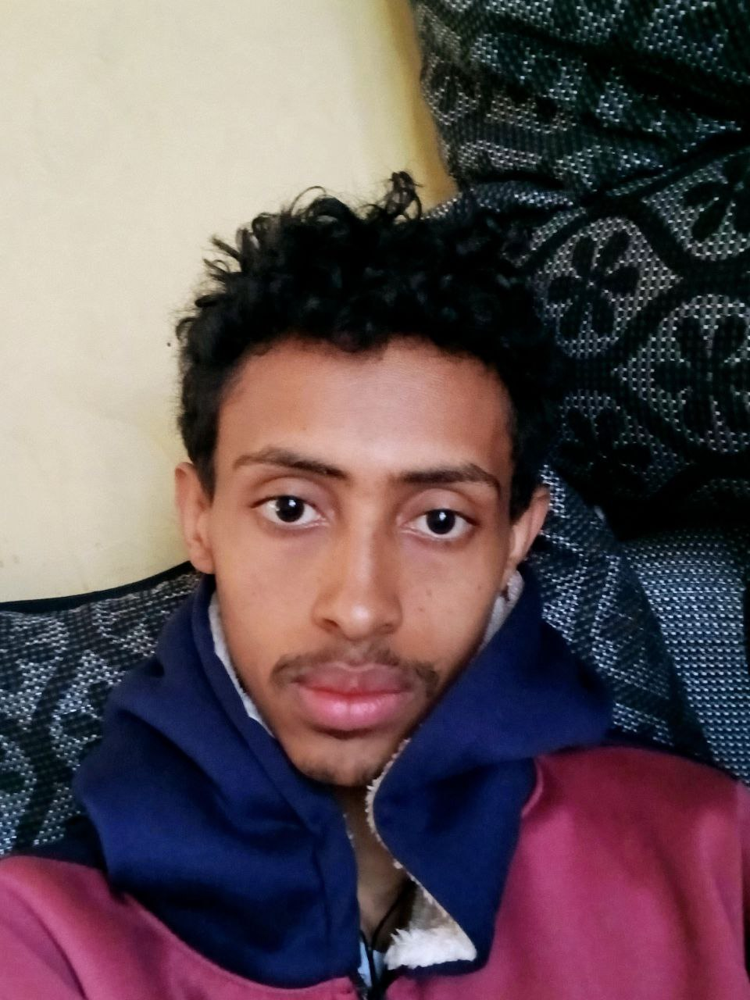

Web Design &
Development with GedIon

Hello! I am Gedion; currently, I am a student pursuing my degree in software engineering at the prestigious Addis Ababa University. I have a passion that bridges both front-end and back-end development, hence bringing robust skills into many programming languages. My programming journey has been quite diverse and enriching, from Python and Java to JavaScript, Dart, and C++.
Read More